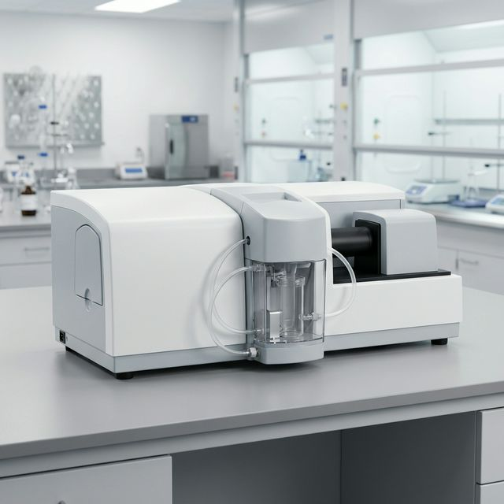

Initializing PSA...

Turn on the Helium-Neon laser (632.8 nm) and verify beam stability.
Auto-align the laser beam through the sample cell to the detector array.
Measure background scattering without sample to establish baseline.
Laser aligned and background measured. Ready for particle size analysis.
Aqueous suspension with ultrasonics. Best for powders.
Compressed air venturi. For free-flowing granules.
Full solution to Maxwell's equations. Required refractive index.
Diffraction-only model. Good for particles > 50 µm.
Multi-element silicon photodiode array covering 0.01° to 135° scattering angles. 64 detector elements with logarithmic spacing.
Run a measurement first
No faults
Bubbles in cell — false large particles
Contaminated windows — high background
Poor dispersion — bimodal distribution